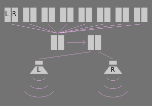

Controls when to send sound data to a buffer for mixing and playing.
Note: the sound volume needs to be divided by 8 to insure there is no over amplification.
Sound data is sent to mixSndTracks() where it is mixed and later seamlessly played with the help of two buffers in loadPlaySnd().

Controls when to gently stop all sound from playing.
Controls when to gently stop a specific sound from playing.
Allocates sound buffers and sets the sample rate.
Frees memory used by the sound buffers.
Sends sound for output.